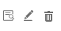
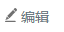
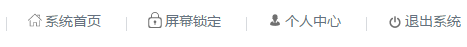
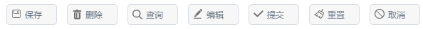
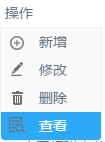
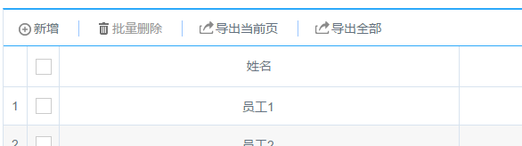
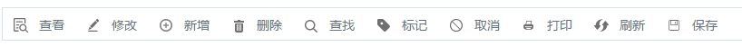
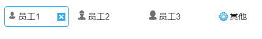

基本图标库
图标库用途
框架提供了160个常用小图标作为基本图标库。图标库索引和效果见组件示例的“资源>>图标库”栏目。
图标库用途非常广泛，举例如下： 1、创建单独的图标 使用span标签然后设置class就可生成图标。生成不带文字的单独图标，使用img_xxx。例如：
<span class="img_edit"></span>
则创建了一个如下的图标
注意，图标默认设置了float为true的样式，所以要在代码后加
<br/>（本框架中的
具有清除浮动功能）
或使用
<div class="clear"></div>
来清除浮动。 连续写多个span，例如
<span class="img_list"></span>
<span class="img_edit"></span>
<span class="img_delete"></span>
<div class="clear"></div>
则创建一组图标，多用于表格中

2、创建含有文字的图标 生成不带文字的单独图标，使用icon_xxx。例如：
<span class="icon_edit">编辑</span>

后面同样要加
或
来清除浮动。 连续横排，多用于功能按钮区。例如：
<li><span class="icon_home">系统首页</span></li>
<li><b></b></li>
<li><span class="icon_lock" onclick="lockScreen()">屏幕锁定</span></li>
<li><b></b></li>
<li><span class="icon_user">个人中心</span></li>
<li><b></b></li>
<li><span class="icon_exit" onclick="top.Dialog.confirm('确定要退出系统吗',function(){});">退出系统</span></li>

3、创建图标按钮 将span放到button标签中，即可创建图标按钮。例如
<button type="button"><span class="icon_save">保存</span></button>
<button type="button"><span class="icon_delete">删除v/span></button>
<button type="button"><span class="icon_find">查询</span></button>
<button type="button"><span class="icon_edit">编辑</span></button>
<button type="button"><span class="icon_ok">提交</span></button>
<button type="button"><span class="icon_clear">重置</span></button>
<button type="button"><span class="icon_no">取消</span></button>

详见button组件
4、创建图标菜单 将span放到菜单项中，即可创建图标菜单。例如：
<div class="popupMenu" style="width:50px;">
<div class="popupMenu_link">
<a href="javascript:;">操作 </a>
</div>
<div class="popupMenu_con icon_con">
<a href="javascript:;"> <span class="icon_add">新增 </span> </a>
<a href="javascript:;"> <span class="icon_edit">修改 </span> </a>
<a href="javascript:;"> <span class="icon_delete">删除 </span> </a>
<a href="javascript:;"> <span class="icon_view">查看 </span> </a>
<div>
</div>

详见弹出菜单组件
5、创建quiGrid的图标工具栏
toolbar:{
items:[
{text: '新增', click: addUnit, iconClass: 'icon_add'},
{ line : true },
{text: '批量删除', click: deleteUnit, iconClass: 'icon_delete',disabled:true},
{ line : true },
{text: '导入', click: showImportDialog, iconClass: 'icon_import',visible:false},
{ line : true,visible:false },
{text: '导出当前页', click: exportPageData, iconClass: 'icon_export'},
{ line : true },
{text: '导出全部', click: exportTotalData, iconClass: 'icon_export'}
]
}

iconClass中可以是图标库中任意的图标，详见grid表格
6 、创建单独的图标工具条 把span放入图标工具条组件中，即可为工具栏添加图标按钮，代码如下：
<button type="button"><span class="icon_save">保存</span></button>
<button type="button"><span class="icon_delete">删除v/span></button>
<button type="button"><span class="icon_find">查询</span></button>
<button type="button"><span class="icon_edit">编辑</span></button>
<button type="button"><span class="icon_ok">提交</span></button>
<button type="button"><span class="icon_clear">重置</span></button>
<button type="button"><span class="icon_no">取消</span></button>

详见图标工具条
7、条件过滤器设置图标

条件过滤器的图标主要是由数据控制的，数据格式如下：
{"list":[{"name":"部门1","list":[
{"key":"员工1","value":"11","iconClass":"icon_user"},
{"key":"员工2","value":"12","iconClass":"icon_user"},
{"key":"员工3","value":"13","iconClass":"icon_user_female"},
{"key":"员工2","value":"12","iconClass":"icon_user"},
{"key":"员工3","value":"13","iconClass":"icon_user"}]},
{"name":"部门2","list":[
{"key":"员工4","value":"21","iconClass":"icon_user_female"},
{"key":"员工5","value":"22","iconClass":"icon_user"},
{"key":"员工6","value":"23","iconClass":"icon_user_worker"}]},
{"name":"部门3","list":[
{"key":"员工1","value":"11","iconClass":"icon_user"},
{"key":"员工2","value":"12","iconClass":"icon_user"},
{"key":"员工3","value":"13","iconClass":"icon_user"},
{"key":"员工2","value":"12","iconClass":"icon_user"},
{"key":"员工3","value":"13","iconClass":"icon_user"}]},
{"name":"部门4","list":[
{"key":"员工4","value":"21","iconClass":"icon_user"},
{"key":"员工5","value":"22","iconClass":"icon_user"},
{"key":"员工6","value":"23","iconClass":"icon_user"}]}]}
8、直接使用图片 例如可以直接使用小图标图片作为树节点的图标
如果图标不够用，可以访问iconfont.cn搜索和下载png小图标